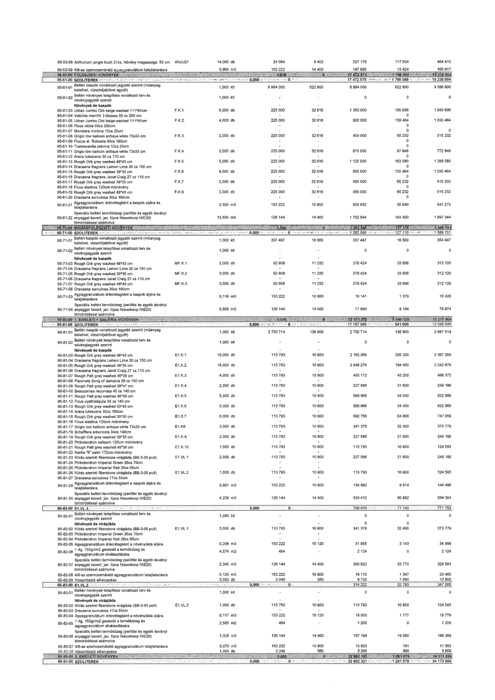

| Tétel | Menny. | Egys. | Anyag e.ár (net HUF) | Díj e.ár (net HUF) | Anyag összesen (net HUF) | Díj összesen (net HUF) | Anyag+Díj összesen (net HUF) |
|---|---|---|---|---|---|---|---|
| 95-53-08 Anthurium jungle bush 21cs, Növény magassága: 50 cm | 14,000 | db | 24 084 | 8 402 | 337 176 | 117 634 | 454 810 |
| 95-53-09 4/8-as szemcseméretű agyaggranulátum talajtakarásra | 0,960 | m3 | 153 222 | 14 400 | 147 093 | 13 824 | 160 917 |
| 95-61-01 Beltéri kaspók vonatkozó jegyzék szerint (műanyag belsővel, vízszintjelzővel együtt) | 1,000 | klt | 8 964 000 | 622 800 | 8 964 000 | 622 800 | 9 586 800 |
| 95-61-02 Beltéri növények telepítése vonatkozó terv és növényjegyzék szerint | 1,000 | klt | 0 | 0 | 0 | 0 | 0 |
| 95-61-03 Urban Jumbo Orb beige washed 111*91cm | 6,000 | db | 225 000 | 32 616 | 1 350 000 | 195 696 | 1 545 696 |
| 95-61-04 Veitchia merrillii 3 törzses 55 cs 250 cm | 0 | db | 0 | 0 | 0 | 0 | 0 |
| 95-61-05 Urban Jumbo Orb beige washed 111*91cm | 4,000 | db | 225 000 | 32 616 | 900 000 | 130 464 | 1 030 464 |
| 95-61-06 Ficus nitida 60cs 280cm | 0 | db | 0 | 0 | 0 | 0 | 0 |
| 95-61-07 Monstera minima 15cs 25cm | 0 | db | 0 | 0 | 0 | 0 | 0 |
| 95-61-08 Grigio low balloon antique white 73x33 cm | 2,000 | db | 225 000 | 32 616 | 450 000 | 65 232 | 515 232 |
| 95-61-09 Flucus el. Robusta 40cs 180cm | 0 | db | 0 | 0 | 0 | 0 | 0 |
| 95-61-10 Tradescantia zebrina 12cs 20cm | 0 | db | 0 | 0 | 0 | 0 | 0 |
| 95-61-11 Grigio low balloon antique white 73x33 cm | 3,000 | db | 225 000 | 32 616 | 675 000 | 97 848 | 772 848 |
| 95-61-12 Areca lutescens 30 cs 170 cm | 0 | db | 0 | 0 | 0 | 0 | 0 |
| 95-61-13 Rough Orb grey washed 48*43 cm | 5,000 | db | 225 000 | 32 616 | 1 125 000 | 163 080 | 1 288 080 |
| 95-61-14 Dracaena fragrans Lemon Lime 30 cs 150 cm | 0 | db | 0 | 0 | 0 | 0 | 0 |
| 95-61-15 Rough Orb grey washed 39*35 cm | 4,000 | db | 225 000 | 32 616 | 900 000 | 130 464 | 1 030 464 |
| 95-61-16 Dracaena fragrans Janet Craig 27 cs 110 cm | 0 | db | 0 | 0 | 0 | 0 | 0 |
| 95-61-17 Rough Orb grey washed 39*35 cm | 2,000 | db | 225 000 | 32 616 | 450 000 | 65 232 | 515 232 |
| 95-61-18 Ficus elastica 120cm műnövény | 0 | db | 0 | 0 | 0 | 0 | 0 |
| 95-61-19 Rough Orb grey washed 48*43 cm | 2,000 | db | 225 000 | 32 616 | 450 000 | 65 232 | 515 232 |
| 95-61-20 Dracaena surculosa 30cs 160cm | 0 | db | 0 | 0 | 0 | 0 | 0 |
| 95-61-21 Agyaggranulátum drénrétegként a kaspók aljára és talajtakarásra | 3,300 | m3 | 153 222 | 10 800 | 505 632 | 35 640 | 541 272 |
| 95-61-22 Speciális beltéri termőközeg (perlittel és egyéb ásványi anyaggal kevert, jav. típus Nieuwkoop NIE20) tömörödéssel számolva | 13,500 | m3 | 126 144 | 14 400 | 1 702 944 | 194 400 | 1 897 344 |
| 95-71-01 Beltéri kaspók vonatkozó jegyzék szerint (műanyag belsővel, vízszintjelzővel együtt) | 1,000 | klt | 337 487 | 16 560 | 337 487 | 16 560 | 354 047 |
| 95-71-02 Beltéri növények telepítése vonatkozó terv és növényjegyzék szerint | 1,000 | klt | 0 | 0 | 0 | 0 | 0 |
| 95-71-03 Rough Orb grey washed 48*43 cm | 3,000 | db | 92 808 | 11 232 | 278 424 | 33 696 | 312 120 |
| 95-71-04 Dracaena fragrans Lemon Lime 30 cs 150 cm | 0 | db | 0 | 0 | 0 | 0 | 0 |
| 95-71-05 Rough Orb grey washed 39*35 cm | 3,000 | db | 92 808 | 11 232 | 278 424 | 33 696 | 312 120 |
| 95-71-06 Dracaena fragrans Janet Craig 27 cs 110 cm | 0 | db | 0 | 0 | 0 | 0 | 0 |
| 95-71-07 Rough Orb grey washed 48*43 cm | 3,000 | db | 92 808 | 11 232 | 278 424 | 33 696 | 312 120 |
| 95-71-08 Dracaena surculosa 30cs 160cm | 0 | db | 0 | 0 | 0 | 0 | 0 |
| 95-71-03 Agyaggranulátum drénrétegként a kaspók aljára és talajtakarásra | 0,118 | m3 | 153 222 | 10 800 | 18 141 | 1 279 | 19 420 |
| 95-71-04 Speciális beltéri termőközeg (perlittel és egyéb ásványi anyaggal kevert, jav. típus Nieuwkoop NIE20) tömörödéssel számolva | 0,568 | m3 | 126 144 | 14 400 | 71 690 | 8 184 | 79 874 |
| 95-81-01 Beltéri kaspók vonatkozó jegyzék szerint (műanyag belsővel, vízszintjelzővel együtt) | 1,000 | klt | 2 750 714 | 136 800 | 2 750 714 | 136 800 | 2 887 514 |
| 95-81-02 Beltéri növények telepítése vonatkozó terv és növényjegyzék szerint | 1,000 | klt | 0 | 0 | 0 | 0 | 0 |
| 95-81-03 Rough Orb grey washed 48*43 cm | 19,000 | db | 113 793 | 10 800 | 2 162 069 | 205 200 | 2 367 269 |
| 95-81-04 Dracaena fragrans Lemon Lime 30 cs 150 cm | 18,000 | db | 113 793 | 10 800 | 2 048 276 | 194 400 | 2 242 676 |
| 95-81-05 Rough Orb grey washed 39*35 cm | 0 | db | 0 | 0 | 0 | 0 | 0 |
| 95-81-06 Dracaena fragrans Janet Craig 27 cs 110 cm | 4,000 | db | 113 793 | 10 800 | 455 172 | 43 200 | 498 372 |
| 95-81-07 Rough Orb grey washed 48*43 cm | 0 | db | 0 | 0 | 0 | 0 | 0 |
| 95-81-08 Pleomele Song of Jamaica 38 cs 150 cm | 2,000 | db | 113 793 | 10 800 | 227 586 | 21 600 | 249 186 |
| 95-81-09 Rough Orb grey washed 56*47 cm | 0 | db | 0 | 0 | 0 | 0 | 0 |
| 95-81-10 Beaucarnea recurvata 45 cs 140 cm | 5,000 | db | 113 793 | 10 800 | 568 966 | 54 000 | 622 966 |
| 95-81-11 Rough Orb grey washed 45*38 cm | 0 | db | 0 | 0 | 0 | 0 | 0 |
| 95-81-12 Ficus cyathistipula 34 cs 140 cm | 5,000 | db | 113 793 | 10 800 | 568 966 | 54 000 | 622 966 |
| 95-81-13 Rough Orb grey washed 53*45 cm | 0 | db | 0 | 0 | 0 | 0 | 0 |
| 95-81-14 Areca lutescens 30cs 160cm | 6,000 | db | 113 793 | 10 800 | 682 759 | 64 800 | 747 559 |
| 95-81-15 Rough Orb grey washed 39*35 cm | 0 | db | 0 | 0 | 0 | 0 | 0 |
| 95-81-16 Ficus elastica 120cm műnövény | 3,000 | db | 113 793 | 10 800 | 341 379 | 32 400 | 373 779 |
| 95-81-17 Grigio low balloon antique white 73x33 cm | 0 | db | 0 | 0 | 0 | 0 | 0 |
| 95-81-18 Schefflera arboricola 34cs 140cm | 2,000 | db | 113 793 | 10 800 | 227 586 | 21 600 | 249 186 |
| 95-81-19 Rough Orb grey washed 39*35 cm | 0 | db | 0 | 0 | 0 | 0 | 0 |
| 95-81-20 Philodendron selloum 125cm műnövény | 1,000 | db | 113 793 | 10 800 | 113 793 | 10 800 | 124 593 |
| 95-81-21 Rough Orb grey washed 45*38 cm | 0 | db | 0 | 0 | 0 | 0 | 0 |
| 95-81-22 Kentia "6" palm 172cm műnövény | 2,000 | db | 113 793 | 10 800 | 227 586 | 21 600 | 249 186 |
| 95-81-23 Kiírás szerinti fiberstone virágláda (BB-3-05 pult) | 0 | db | 0 | 0 | 0 | 0 | 0 |
| 95-81-24 Philodendron Imperial Green 26cs 70cm | 0 | db | 0 | 0 | 0 | 0 | 0 |
| 95-81-25 Philodendron Imperial Red 26cs 65cm | 1,000 | db | 113 793 | 10 800 | 113 793 | 10 800 | 124 593 |
| 95-81-26 Kiírás szerinti fiberstone virágláda (BB-3-05 pult) | 0 | db | 0 | 0 | 0 | 0 | 0 |
| 95-81-27 Dracaena surculosa 17cs 55cm | 0 | db | 0 | 0 | 0 | 0 | 0 |
| 95-81-28 Agyaggranulátum drénrétegként a kaspók aljára és talajtakarásra | 0,881 | m3 | 153 222 | 10 800 | 134 982 | 9 514 | 144 496 |
| 95-81-29 Speciális beltéri termőközeg (perlittel és egyéb ásványi anyaggal kevert, jav. típus Nieuwkoop NIE20) tömörödéssel számolva | 4,229 | m3 | 126 144 | 14 400 | 533 412 | 60 892 | 594 304 |
| 95-82-01 Beltéri növények telepítése vonatkozó terv és növényjegyzék szerint | 1,000 | klt | 0 | 0 | 0 | 0 | 0 |
| 95-82-02 Kiírás szerinti fiberstone virágláda (BB-3-05 pult) | 3,000 | db | 113 793 | 10 800 | 341 379 | 32 400 | 373 779 |
| 95-82-03 Philodendron Imperial Green 26cs 70cm | 0 | db | 0 | 0 | 0 | 0 | 0 |
| 95-82-04 Philodendron Imperial Red 26cs 65cm | 0 | db | 0 | 0 | 0 | 0 | 0 |
| 95-82-05 Agyaggranulátum drénrétegként a növényláda aljára | 0,208 | m3 | 153 222 | 15 120 | 31 855 | 3 143 | 34 998 |
| 95-82-06 1 rtg. 150g/m2 geotextil a termőközeg és agyaggranulátum elválasztására | 4,574 | m2 | 464 | 0 | 2 124 | 0 | 2 124 |
| 95-82-07 Speciális beltéri termőközeg (perlittel és egyéb ásványi anyaggal kevert, jav. típus Nieuwkoop NIE20) tömörödéssel számolva | 2,345 | m3 | 126 144 | 14 400 | 295 822 | 33 770 | 329 591 |
| 95-82-08 4/8-as szemcseméretű agyaggranulátum talajtakarásra | 0,125 | m3 | 153 222 | 10 800 | 19 113 | 1 347 | 20 460 |
| 95-82-09 Vízszintjelző elhelyezése | 3,000 | db | 3 240 | 360 | 9 720 | 1 080 | 10 800 |
| 95-83-01 Beltéri növények telepítése vonatkozó terv és növényjegyzék szerint | 1,000 | klt | 0 | 0 | 0 | 0 | 0 |
| 95-83-02 Kiírás szerinti fiberstone virágláda (BB-3-05 pult) | 1,000 | db | 113 793 | 10 800 | 113 793 | 10 800 | 124 593 |
| 95-83-03 Dracaena surculosa 17cs 55cm | 0 | db | 0 | 0 | 0 | 0 | 0 |
| 95-83-04 Agyaggranulátum drénrétegként a növényláda aljára | 0,117 | m3 | 153 222 | 15 120 | 18 003 | 1 777 | 19 779 |
| 95-83-05 1 rtg. 150g/m2 geotextil a termőközeg és agyaggranulátum elválasztására | 2,585 | m2 | 464 | 0 | 1 200 | 0 | 1 200 |
| 95-83-06 Speciális beltéri termőközeg (perlittel és egyéb ásványi anyaggal kevert, jav. típus Nieuwkoop NIE20) tömörödéssel számolva | 1,325 | m3 | 126 144 | 14 400 | 167 184 | 19 085 | 186 269 |
| 95-83-07 4/8-as szemcseméretű agyaggranulátum talajtakarásra | 0,070 | m3 | 153 222 | 10 800 | 10 802 | 761 | 11 563 |
| 95-83-08 Vízszintjelző elhelyezése | 1,000 | db | 3 240 | 360 | 3 240 | 360 | 3 600 |
